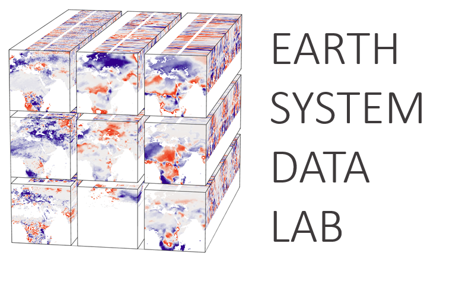
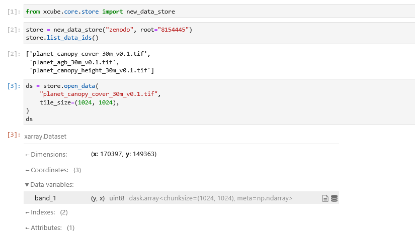

Image: Copernicus Climate Change Service, Climate Data Store (2023): ERA5
hourly data on single levels from 1940 to present. Mean air temperature 2m.
(modified to metres)
About

DeepESDL – the Deep Earth System Data Laboratory provides access to a wide range of Earth Science data in analysis-ready data cubes and a virtual lab for analysis and processing. Fully integrated into EarthCODE, it offers a comprehensive suite of services for sharing and publishing results, workflows, and experiments. Particular emphasis is placed on machine learning and artificial intelligence, including AI-ready datasets, integrated programming environments, and access to cloud and GPU computing resources.
DeepESDL was originally developed in an ESA-funded project with support from University of Leipzig, Earthwave and the Max Planck Institute for Biochemistry, and is now offered as a service through the Network of Resources.
Services


Data
DeepESDL provides access to Earth System data in a unified, analysis-ready framework. Work with public and private datasets on demand.

Ready to join DeepESDL?
Join us to unlock the potential of Earth Observation data.